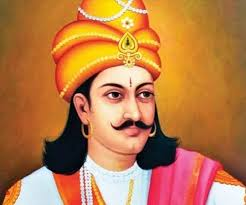
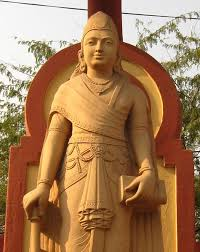

Chandragupta Maurya

(Pataliputra, 340 a.C. - Shravanbelgola, 298 a.C.) Monarca de la India (c. 321 - c. 298 a.C.) que fue el fundador de la dinastía Maurya y gobernó el antiguo reino de Magadha (actual estado de Bihar). Después de deponer al rey Mahapadma Nanda de Magadha dominó gran parte del norte de la India, creando el primer gran imperio indio, que luego fue extendido por su hijo Bindusara y su nieto Asoka. Se cree que combatió a Alejandro Magno cuando éste invadió el norte de la India. También luchó contra Seleuco I Nicátor (hacia 304 a.C.), logrando el control total de Beluchistán y Afganistán.
Conocido por los griegos como Sandrocottos, se dice que en su juventud Chandragupta conoció a Alejandro Magno en el Punjab, en el año 326 a.C.
Poco después, Chandragupta reclutó un ejército y conquistó Magadha, derrotando a la dinastía Nanda. Estableció su capital en Pataliputra (actual Patna) y, aprovechando la muerte de Alejandro Magno (323 a.C.), se dirigió al oeste para librar a la región del Punjab de las fuerzas macedónicas. Siguió llevando a cabo conquistas hasta extender el reino de Magadha por todo el norte de la India, desde la bahía de Bengala hasta el mar Arábigo.
El poder de Chandragupta fue desafiado por el rey indogriego Seleuco I, el sucesor de Alejandro en la región, quien invadió el norte del subcontinente en el 305 a.C., pero sufrió una derrota aplastante. De este modo, Chandragupta añadió a sus posesiones todo el territorio situado al norte del Hindu Kush, incluyendo Beluchistán y Afganistán. Cuenta la leyenda que Chandragupta abdicó, se hizo monje y, voluntariamente exiliado en el sur de la India, se suicidó ayunando hasta la muerte.
El imperio de la dinastía Maurya fundada por él siguió extendiéndose durante el reinado de su nieto Asoka. La dinastía Maurya configuró un imperio centralista con una avanzada administración territorial. El imperio estaba dividido en cinco virreinatos; el primero, con capital en Pataliputra, era gobernado directamente por el emperador, mientras que otros cuatro gobernantes, que dependían directamente de él, se hacían cargo de las capitales restantes.

Cada uno de estos virreinatos estaba dividido en distritos, que eran gobernados por mahamatras y contaban con un importante cuerpo de funcionarios, muy preparados, encargados de la inspección, la administración y la justicia. Así mismo, los emperadores maurya dispusieron de un importante cuerpo diplomático y enviaron embajadores a Occidente, el sur de la India y Sri Lanka, favorecieron el desarrollo de un arte autóctono (con raíces en el arte persa y las tradiciones populares) y establecieron el budismo como religión oficial.
Chandragupta Maurya contrajo matrimonio con una hija de Seleuco I Nicátor, quien envió a la corte de Pataliputra como embajador a Megástenes, autor de la obra Indika, a la que se debe gran parte de los conocimientos sobre la historia de la India de este período.
Resumen
Chandragupta no solo fue un conquistador, sino también un gran reformador. Tras establecer su imperio, implementó una burocracia altamente estructurada, dividiendo el territorio en provincias con gobernadores designados directamente por él. Se dice que tenía un ejército de más de 600,000 soldados, además de una red de espionaje profesional, que le permitía conocer en detalle lo que ocurría en cada rincón del imperio.
Un aspecto destacado de su vida fue su interacción con el mundo helenístico. Luego de derrotar a Seleuco I, firmó un tratado de paz y se casó con una princesa griega, uniendo así las culturas india y griega en un gesto diplomático sin precedentes. Además, en sus últimos años, renunció al lujo del palacio y vivió como un monje jainista, mostrando su fuerte espiritualidad.